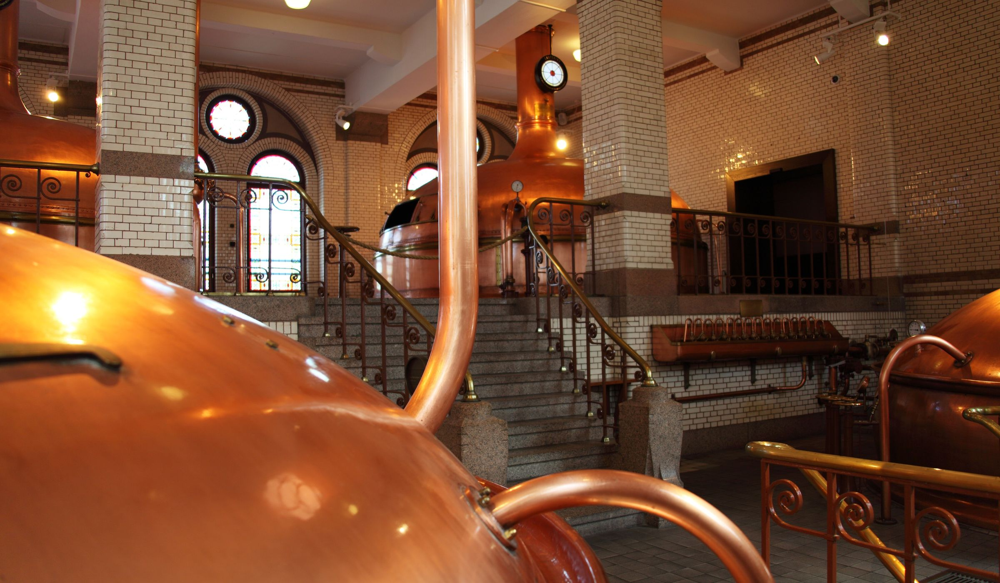

One solution for the whole beer business
Beer365 joins the brewhouse, cellar, packaging, quality, plant, supply chain, sales and finance on one batch record, inside your own Microsoft tenant.
One record, every department
Most breweries already hold the numbers that explain their losses. They sit in a brew log, a laboratory sheet, a packaging report and the finance ledger, and nobody joins them.
Beer365 answers 221 questions a brewer asks, grouped into nine areas of the business. Every answer reads from the same batch record, so the cellar and the finance team see one number.
Start with the area that costs you most; every other area reads from the same record.
Selected work:
Areas of the business
- Raw materials and recipe27 questions
- Brewhouse14 questions
- Fermentation and cellar30 questions
- Packaging16 questions
- Quality, safety and traceability34 questions
- Energy, utilities and plant36 questions
- Supply chain, sales and marketing30 questions
- Finance, duty, ESG and people26 questions
- Across the whole brewery8 questions
Know what every malt and hop lot really delivers
Malt, hops, water and the recipe, from the supplier's certificate to the pilot brew.
- COA versus realityIs the supplier's certificate telling the truth?
- Supplier scorecard by lotWhich supplier is quietly the expensive one?
- Malt lot to brewhouse performanceDid this malt lot cost me extract?
- Hop alpha decay trackingWhat bitterness am I actually buying by the time I use it?
- Contract and purchase timingAm I over contracted on a hop I no longer sell?
- Adjunct substitution feasibilityCan rice or syrup replace malt without breaking spec?
Modules01 Telemetry 10 Raw materials
Every point of extract, brew by brew
Milling to wort cooling, and every point of extract along the way.
- Brewhouse yield per brew and trendAm I getting the extract I paid for?
- Mash pH and residual alkalinityIs my mash chemistry where I think it is?
- Hop utilisation, actual versus modelIs my bitterness landing where the model says?
- Whirlpool and trub loss in moneyWhat do those knock-out losses cost a year?
- Kettle full and cast gravity controlIs my gravity control drifting by brand?
- Batch to batch consistency indexHow consistent is this brand, in one number?
Modules03 Fermentation 05 Yield and loss
Every tank following the plan written for it
Yeast, fermentation, maturation, filtration and the beer's physical stability.
- Cellar beer lossHow much beer dies in cones, heels and transfers?
- Blend exposure calculationIf one brew is bad, how much beer is affected?
- Tank days and cellar capacityWhat is my real bottleneck, litres or tank days?
- Colour control versus targetIs colour drifting by brand and season?
- Flavour unit and threshold libraryIs this compound above threshold in this beer?
- Fermentation curve versus its own planIs this tank following the plan written for it?
Every line, every pack, every millilitre
Bottle, can and keg lines, from fill level to dissolved oxygen.
- Date code and traceability completenessCan I resolve any date code to a tank?
- Changeover cost and short runsWhat does a small SKU run really cost?
- Packaging material scrapWhat is scrap costing per thousand cans?
- Short shelf life stock detectionWhich pallets should ship first, and to where?
- TPO and dissolved oxygen monitoringAm I packaging shelf life away?
- Fill level and give-awayHow many free millilitres am I donating?
Modules04 Packaging 05 Yield and loss
One record from the laboratory to the complaint
Laboratory, sensory, food safety, complaints and recall.
- Off flavour library and matchingWhat does this complaint most likely mean?
- Root cause copilot with refutationWhat caused it, and what did not?
- GMP assessment scoringWhere does the plant fail a GMP walk?
- Product security and tamper exposureWhere could someone interfere with product?
- Allergen and declaration controlIs every label legally correct for its market?
- Conformance by parameter and brandWhich spec line fails most, and on what?
Modules06 Quality 08 Excise
Energy, water and kit measured per hectolitre
Power, steam, refrigeration, CO2, water, effluent and the kit itself.
- Spent grain, trub and yeast valueAm I giving away a sellable by-product?
- Sensor drift and calibration intervalsWhich instrument is lying to me?
- Critical spares exposureWhat single spare stops the brewery?
- Water to beer ratio by areaWhere does my water ratio actually go wrong?
- Corrosion risk register by dutyWhere will chloride or pitting bite me first?
- Refrigeration plant efficiencyIs the ammonia plant getting worse?
Modules01 Telemetry 07 Energy
From the warehouse to the outlet and the taproom
Warehouse, freshness, distributors, outlets, demand and brand.
- Stock cover versus forecastWhere will I run out next month?
- Revenue per hectolitre by channelWhich channel actually pays?
- Taproom mix and pour analysisWhat is the taproom really selling?
- Key account profitabilityWhich big customer is a loss leader?
- Regional demand mappingWhere does this brand actually work?
- Seasonality aligned calendarWhen should each brand shout?
Modules11 Supply chain and sales
True cost, defensible duty and the knowledge behind both
True cost per hectolitre, excise, carbon, compliance and the shift.
- Contract brewing profitabilityIs the contract work paying for its tank days?
- Cash tied to tank daysWhat is a tank day worth to me?
- Tribal knowledge captureWhat leaves when the head brewer leaves?
- True COGS per hL by brand and packWhat does each beer cost, honestly?
- Yield loss in money, tank to tradeWhat are my losses worth in a year?
- Margin variance alertingWhich margin slipped this month, and why?
Modules08 Excise 12 Finance and people
Ask the whole brewery a question
The questions that cut across every department at once.
- Clock and identity reconciliationDo these four systems agree on time and batch?
- Ask the brewery in plain EnglishAnswer a brewer's question without SQL
- Automatic daily briefWhat happened overnight that I should know?
- Vendor-neutral adaptorsHow do I onboard the next brewery in a week?
- The Brewery ScoreHow do I compare with breweries my size?
- Anonymised process benchmarksIs my brewhouse yield normal or terrible?
Modules02 Digital twin 09 Copilot
Want to know more?
Start with the area that hurts
Tell us which part of the brewery costs you most. We will show you how it is answered from your own records.